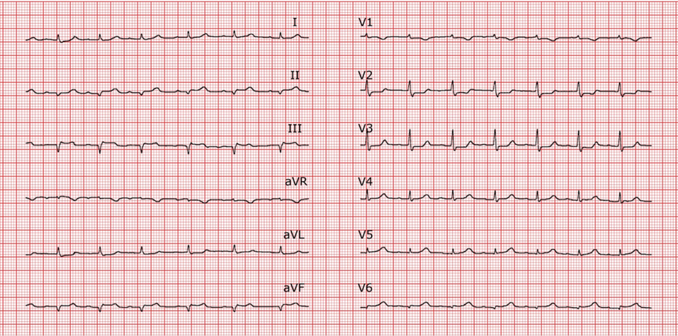

Vous voyez en consultation pré anesthésique un homme de 70 ans, adressé pour colectomie gauche par voie coelioscopique pour cancer. Les antécédents associent : cardiopathie ischémique avec stent actif datant de mars 2016, hypertension artérielle, fibrillation atriale paroxystique et diabète type 2. Le patient a été vu en consultation par son cardiologue en avril 2017.
Son traitement associe : rivaroxaban (Xarelto), bisoprolol (Bisoce), Kardegic 75 mg, atorvastatine (Tahor), metformine (Glucophage), ramipril (Triatec).
A l’examen clinique, vous notez un poids de 75 kg pour 175 cm, avec une perte récente de 10 kg en 3 mois. La pression artérielle mesurée est 130/70 mmHg, la fréquence cardiaque est à 72 bpm. Il n’existe pas de tabagisme actif et l’auscultation cardio-respiratoire est normale. Le patient vous indique qu’il peut monter 2 étages.
📝 Questions
Question 1
Quel bilan sanguin prescrivez-vous à la consultation?
Question 2
Interprétez l'électrocardiogramme suivant :

Question 3
Quels sont les éléments du score de Lee ?
Question 4
Sur quels arguments faites vous réaliser vous une échographie cardiaque ?
Question 5
Quels sont les éléments cliniques principaux à rechercher à la consultation anesthésique pour évaluer le retentissement du diabète ?
Question 6
Quelle gestion du traitement réalisez vous en préopératoire ?
Question 7
Quel monitoring mettez-vous en place chez ce patient ?
Question 8
Le bilan préopératoire vous montre un risque d'inhalation. Quel est votre protocole médicamenteux d'induction anesthésique (avec les doses) ?
Question 9
Comment est votre stratégie ventilatoire à l'induction et en per opératoire ?
Question 10
Antibioprophylaxie (avec doses) ?
Question 11
La pression artérielle chute brutalement à 60/40 mmHg lors de l'insufflation coelioscopique. Quelles sont vos hypothèses ?
Question 12
Prescrivez vous des AINS pour l'analgésie post opératoire ? Quels sont vos arguments ?
Question 13
Comment assurez vous la thrombo-prophylaxie ?
Question 14
A J2, vous êtes appelé car le patient est agité, tachycarde et sa pression artérielle est à 85/40 mmHg. Citez les 5 diagnostics principaux .
Question 15
Le patient a été transféré en réanimation car il est oligurique et reste hypotendu. Sur quels éléments décideriez vous une épuration extra rénale ? Quelle modalité proposeriez-vous ?
Question 16
A J5, toujours en réanimation, le patient présente une détresse respiratoire aiguë. Quelles sont vos 4 hypothèses diagnostiques ?
Question 17
Après sa sortie de réanimation alors que le patient séjourne en salle, il est retrouvé en arrêt cardiaque. Quelle est votre prise en charge initiale (10 premières minutes)?
Question 18
Quelles sont les arguments cliniques et paracliniques du pronostic de l'arrêt cardiaque ?
Question 19
L'évolution neurologique du patient est défavorable. A J5 post-arrêt, vous envisagez une limitation des traitements. Quelles en sont les modalités pratiques ?
🚀 Rejoignez notre formation complète
Cette annale fait partie de notre programme de formation. Découvrez notre préparation intensive avec corrections détaillées pour maximiser vos chances de réussite aux EVC.